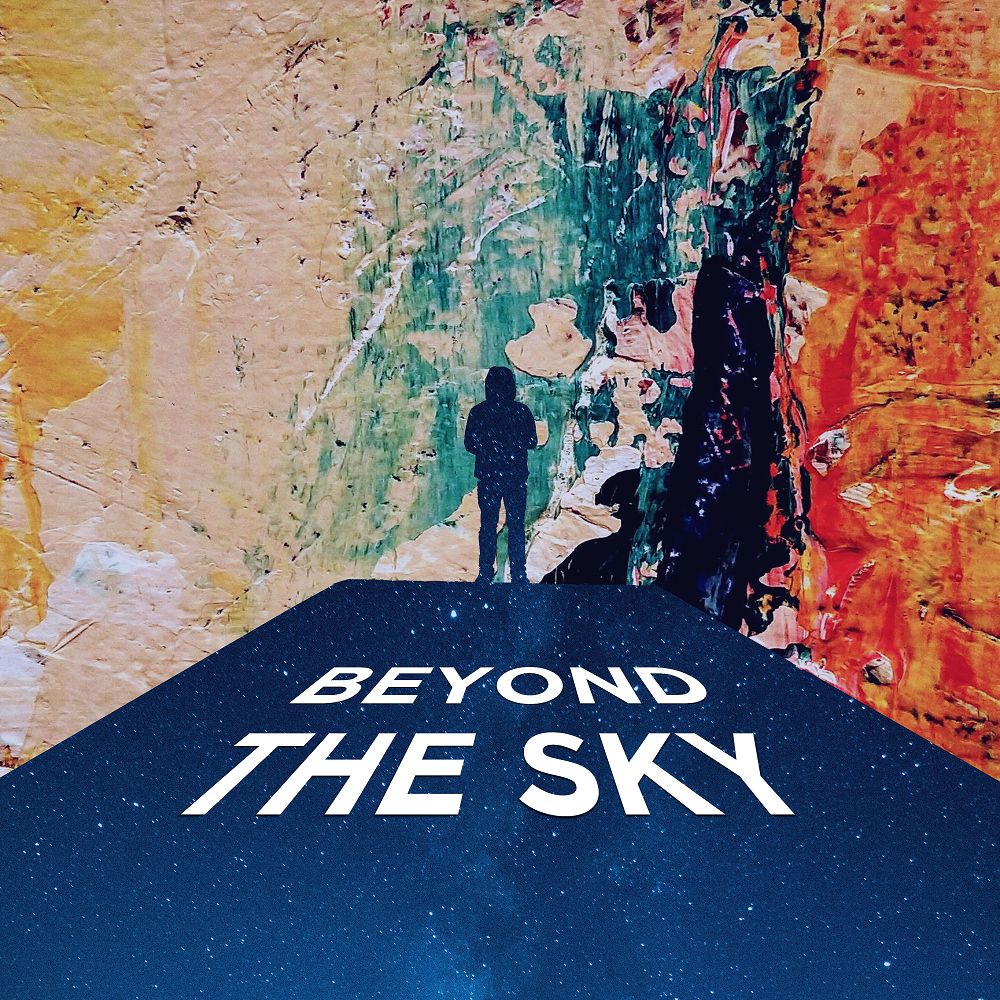
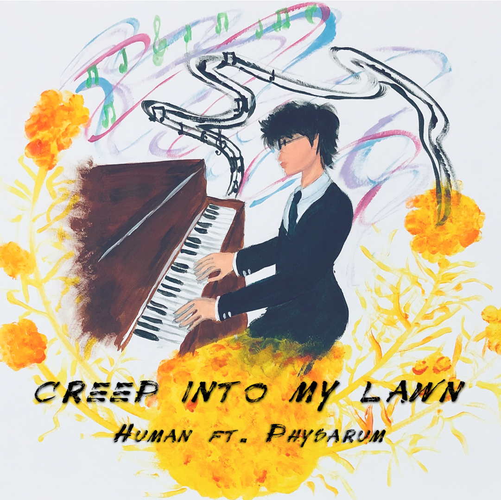

Music
Beyond the Sky
A song written towards daring to dream beyond the sky and listening to what your heart says.
Creep into my Lawn
A rock song composed in collaboration with Physarum polycephalum, a slime-moud.
I feel so Cold, I'm getting Old

This song is about the British weather and the things I miss about home :)